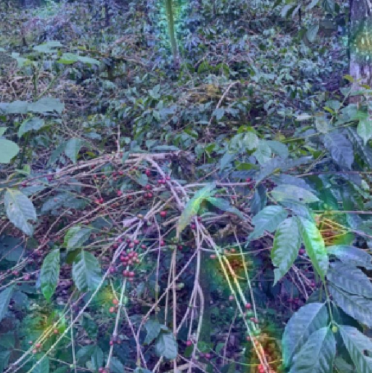
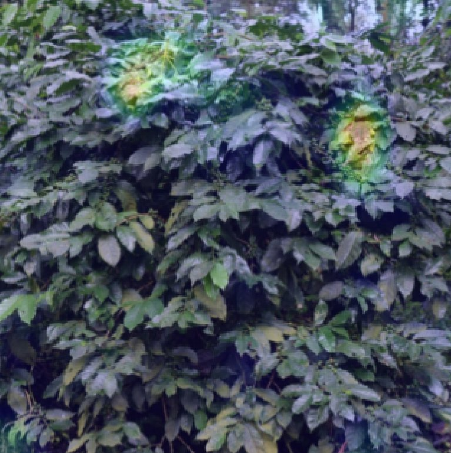
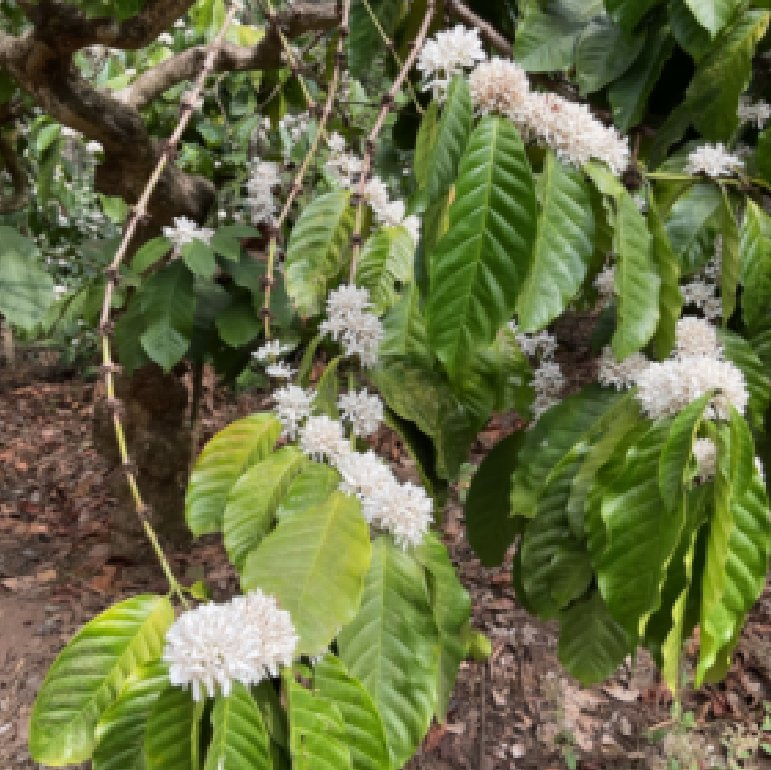
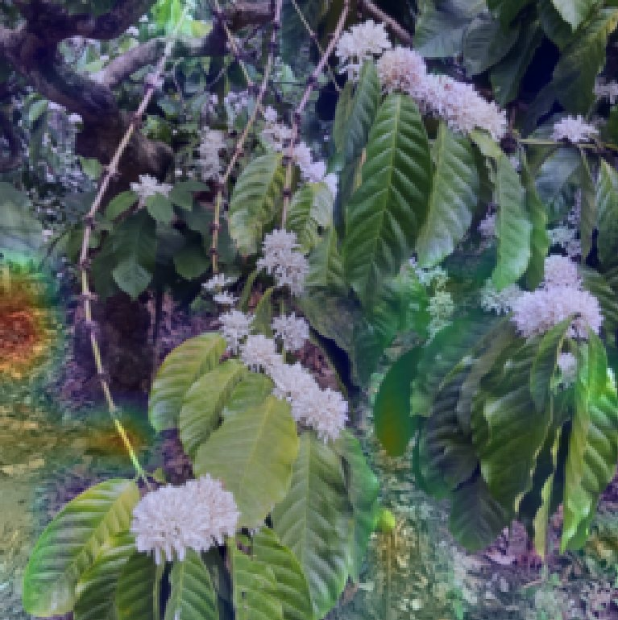

coffee-plant photos collected and cleaned, from 78 plants
93.6%
of infested test photos correctly flagged (photos the model never saw)
3-way
answer per photo: no visible signs, retake, or WSB signs likely
V1
prototype ready; the next gains come from more field data
Prepared for
Management review
Prepared by
CWSB AI team · Charan & Leela
Date
18 November 2026
Status
Internal · prototype stage
Varsapradaya · CWSB AI screening
Project synopsis
Executive summary
The one-page version
We have built and tested a working AI model that looks at a photo of a coffee plant and says whether it shows signs of White Stem Borer. It is a solid first version. Its main limit today is the amount of data, not the technology.
1The problem
Coffee White Stem Borer (CWSB) is one of the most damaging pests of Arabica coffee in India. The grub feeds hidden inside the stem, so damage shows late. Finding it today means a trained person inspecting stems plant by plant.
2What we built
A complete pipeline: field data collection, a cleaned and private dataset, a modern image-AI model, clear decision rules, evidence heatmaps, a deployment-ready model file and a one-click retraining process for future versions.
3How well it works
On 59 photos it had never seen, it correctly flagged 44 of the 47 infested photos it gave a verdict on (93.6%), cleared 7 of 8 healthy photos, and asked for a retake on 4 unclear ones.
4How it helps
Field teams can screen many plants in minutes and spend inspection time only where a photo says to look. Infestations can be found earlier and more consistently, and every screening adds data to the Varsapradaya platform.
5What it can’t do yet
It learned from only 9 healthy plants. It recognises whole-plant decline rather than early bore holes, and it confuses close-up photos with infestation. It is a prototype, not yet a product to hand to farmers.
6What we need
A second round of field data: at least 150 healthy plants, plants stressed by other causes, and early-stage infestations, with labels confirmed by stem inspection and checked by an expert.
Bottom line
The technology works and the pipeline is built. The next big improvement comes from data: with a second field round, the same pipeline produces Version 2 in about 1–1.5 hours of cloud training.
Varsapradaya · Internal
2
Varsapradaya · CWSB AI screening
Project synopsis
Section 1
The problem we are solving
Coffee White Stem Borer (Xylotrechus quadripes) is a beetle whose grubs tunnel inside the main stem of Arabica coffee plants. Because the feeding is hidden, the visible signs appear late, often when the plant can no longer be saved.
Adult beetles that emerge from an infested plant lay eggs on nearby plants. Every infested plant that is missed raises the risk for the plantation around it.
Signs our field team records on each plant:
Ridges on the barkExit holesPowdery frassBeetlesYellowing leavesWiltingDie-back
Most of these are only clear in mid- to late-stage infestation, which is why early detection is valuable.
SlowStems are checked plant by plant, by hand, across large estates.
Needs expertiseEarly signs are subtle and easy to miss without training.
InconsistentResults vary with who inspects, when, and how carefully.
Section 2
How the solution works
A farmer or field officer takes one photo of a plant. Within seconds the system checks the photo, scores it and returns a clear answer.
1
PhotographThe whole plant, from 2–3 metres
2
Quality checkBlurry, too dark or glare? Ask for a retake
3
AI modelScores the photo from 0 (healthy) to 1 (infested)
4
VerdictOne of three plain answers
5
ActionInspect and treat the plants that were flagged
Verdict
When
What the user does
No visible signs
Score below 0.50
No action needed now.
Retake / inconclusive
Score 0.50 to 0.89, or a poor-quality photo
Take a new photo following the on-screen guide.
WSB signs likely
Score 0.90 or higher
Inspect the stem physically, then treat or remove the plant as advised.
When a plant is photographed more than once, the plant’s verdict uses its highest-scoring photo. This cautious rule favours catching infestations over missing them.
Varsapradaya · Internal
3
Varsapradaya · CWSB AI screening
Project synopsis
Section 3
What we built
Eight parts, all working today and kept in the project repository.
01
Field data collection
Field visits from 28 Oct to 2 Nov 2026 across Kodagu and Chikkamagaluru (including Kushalnagar, Ponnampet, Somwarpet, Koppa and CCRI Balehonnur), plus Coffee Board archive photos. A field validation sheet records each plant’s symptoms and each hotspot’s conditions (temperature, humidity, light, soil moisture, pH, NDVI).
02
A clean, private dataset
498 photos. Location data stripped from every photo, exact and near-duplicate photos removed, and each photo scored for blur, glare and darkness.
03
Honest testing by design
Photos are grouped by plant and split into training, validation and test sets (70 / 15 / 15). A plant never appears in two sets, so test results are not inflated. The script refuses to run if this rule would be broken.
04
The AI model
ConvNeXt-Tiny, a modern image-recognition network (about 28 million parameters) pre-trained on millions of general images, then fine-tuned on our photos using a Google Colab GPU. It beat a simpler alternative in a head-to-head comparison.
05
Decision rules and quality gate
The three-way verdict, with thresholds set from the scores of healthy photos. Poor photos are rejected before they are scored, with a clear “please retake” message.
06
Evidence heatmaps
For every photo, a heatmap shows which part of the image drove the decision. PDF reports let agronomists check the model’s reasoning, photo by photo.
07
Deployment-ready model
Exported to ONNX, an open standard format that runs on a phone, a server or a small field device, without the training software.
08
One-click retraining
A notebook takes old and new photos, retrains, sets thresholds, compares old and new models on the same test photos and packages the next version (v2, v3…). The old model stays in service until the new one wins.
Dataset used for Version 1
Photos
Distinct plants
Source
Healthy
28
9
Coffee Board archive
Infested (WSB)
470
69
202 Coffee Board archive + 268 from our 2026 field visits
Total
498
78
Varsapradaya · Internal
4
Varsapradaya · CWSB AI screening
Project synopsis
Section 4
How well it works
Tested on 59 photos of 8 plants that were kept aside and never used for training or tuning.
93.6%
of infested photos correctly flagged (44 of 47 with a verdict)
87.5%
of healthy photos correctly cleared (7 of 8)
92.7%
correct whenever a verdict was given (51 of 55)
4 of 59
photos sent back for a retake instead of a guess
Infested photos51 in the test set
44 correctly flagged
4
3
Healthy photos8 in the test set
7
CorrectSent to retakeWrong (3 missed, 1 false alarm)
Per plant (8 test plants)
Flagged
Retake
Missed
Cleared
Comment
7 infested plants
5
2
0
–
No infested plant was cleared.
1 healthy plant
1
–
–
0
False alarm, caused by one wide landscape photo of the estate.
Full-quality photos do better. At full resolution, 95.9% of infested photos are flagged, against 93.6% for reduced-size photos, so the app should send full-quality images.
Robust to lighting. Only 1 of 30 photos changed its verdict when made brighter or darker.
All 3 misses come from one plant whose photos show no visible damage. It may be mislabelled and needs an expert review.
A bug we found and fixed. Our first decision rule caused 14 of 18 misses. Correcting it raised detection from about 86% to 93.6% with the same model.
Read these numbers with care. 59 test photos is a small sample, so the true figures could be about 7 points higher or lower. The healthy result comes from photos of a single healthy plant. More healthy plants are the top priority (Section 8).
Varsapradaya · Internal
5
Varsapradaya · CWSB AI screening
Project synopsis
Section 5
What the model looks at
Each heatmap shows where the model focused. Warmer colours (yellow to red) mark the areas that drove the decision most.
Photo as the model sees it

Heatmap
WSB signs likelyCorrect
Infested plant · score 1.00
A declining plant with dry, leafless branches. The model scores it with full confidence. It was not trained on this plant.
Photo as the model sees it

Heatmap
No visible signsCorrect
Healthy plant · score 0.17
A dense, green canopy. Only small patches draw attention and the score stays well below the 0.50 line.

Photo as the model sees it

Heatmap
WSB signs likelyWrong
Healthy close-up · score 0.99
A healthy flowering branch, photographed close up. The model never saw close-ups in training, so it gives a confident wrong answer, reacting to dry leaf litter on the ground. A planned framing check will reject photos like this before they are scored.
What this tells us
Every training photo is a whole-plant shot, so the model has learned to read whole-plant condition: canopy density, colour and die-back. That is useful for screening, but it means it spots mid- to late-stage infestation, not early bore holes. Teaching it the stem-level signs needs stem close-ups, paired with the whole-plant photo, in the next round of data.
Varsapradaya · Internal
6
Varsapradaya · CWSB AI screening
Project synopsis
Section 6
How this solution helps
The tool does not replace stem inspection. It decides where inspection is needed, so scarce expert time goes to the right plants.
Screen more plants, faster
A photo takes seconds. Field staff can cover far more plants per day and save stem inspections for the plants the model flags.
A consistent first opinion
Every plant is judged by the same rules, whoever takes the photo and whichever estate it is on.
Act sooner, limit the spread
Flagged plants can be inspected and treated or removed before emerging beetles reach neighbouring plants.
Better photos and records
The quality check asks for a retake on blurry, dark or glare-filled photos, so poor data never reaches the model. Each screening can be logged by plant and date.
Evidence you can check
Heatmaps show why a plant was flagged, so agronomists and farmers can trust, or challenge, each result.
Grows with the platform
It sits alongside Varsapradaya’s weather and soil data. A separate risk score (season, altitude, shade, rainfall) can be shown next to each verdict, and each season’s photos make the next model better.
Who benefits
What they get
Farmers
An early warning from a phone photo, a clear next step, and fewer plants lost to late detection.
Field officers and agronomists
A prioritised list of plants to inspect, consistent screening across estates, and heatmap evidence to explain each call.
Varsapradaya
A pest-intelligence feature for the platform, a growing labelled dataset, and a reusable pipeline that can be applied to other pests and diseases.
Varsapradaya · Internal
7
Varsapradaya · CWSB AI screening
Project synopsis
Section 7
Current limitations, and the fix for each
These are known, measured and understood. None needs a new kind of technology: most are solved by better data, and the rest by a small framing check.
Limitation
What it means
Planned fix
Very few healthy examples: 9 healthy plants against 69 infested
Results carry wide uncertainty, and healthy plants may be flagged.
Photograph 150+ distinct healthy plants across estates, shade levels, times of day and seasons.
Sees whole-plant decline, not bore holes
Finds mid- to late-stage infestation. Early cases, the most valuable to catch, are likely missed.
Collect early-stage cases, and stem close-ups paired with the whole-plant photo of the same plant.
Close-ups and unusual framings fool it
All 19 close-up photos of healthy branches we tested were flagged as WSB.
Add a framing check that rejects unsuitable photos, plus a camera guide in the app.
No “look-alike” examples
Drought, nutrient deficiency or die-back from other causes may be read as WSB.
Photograph stressed but uninfested plants and label them as not WSB.
Labels are per plant, not per photo, and not graded
Some “infested” photos show no visible evidence, which blurs what the model learns.
Record labels from physical stem inspection, graded early, mid or late.
Tried and set aside: an automatic “unfamiliar photo” detector caught only 5 of those 19 close-ups. A purpose-trained framing check is needed instead.
Design decisions we made on purpose
Split by plant, never by photoPrevents the same plant appearing in training and testing, which would inflate every reported number.
No image filters or background removalTested and rejected. It strips out the canopy context the model relies on and adds its own errors.
Weather is not fed into the modelWith one season of data the model would learn “this month means infested”. Weather becomes a separate, displayed risk score.
One simple question per photoThe model answers “healthy or infested?” for each photo (image classification), which keeps labelling and maintenance simple.
Varsapradaya · Internal
8
Varsapradaya · CWSB AI screening
Project synopsis
Section 8
Roadmap
Stage 1 completeVersion 1 prototype
Field data, round 1
Clean dataset and leak-proof split
Model trained, thresholds set
Evidence heatmap reports
Deployment format (ONNX) exported
One-click retraining notebook
1
Field data, round 2Blocks everything else
About 400 photos of 150+ healthy plants, look-alike stressed plants, early-stage infestations and stem close-ups paired with whole-plant shots, all with inspection-verified labels graded by severity. At that size the margin of error narrows from about ±7 points to about ±2.5.
2
Framing check
A small model that says “this is not a whole-plant photo, please retake”. It would have caught all 19 close-up false alarms. The training photos are cheap to collect and need no agronomy knowledge.
3
Retrain as Version 2
Run the retraining notebook on the larger dataset, with at least 30 healthy plants held back for testing. Version 2 replaces Version 1 only if it performs better on the same test photos.
4
Field product
A prediction service (API), then a farmer app with a camera guide, the three-way verdict and retake prompts, and the agronomic risk score shown alongside.
Section 9
Support we need
01
Field time and estate access
For data round 2: healthy and look-alike plants across several estates, shade levels and seasons.
02
An entomology expert
For example from CCRI or the Coffee Board, to confirm labels by stem inspection and review the one disputed plant.
03
A business decision
In screening, which costs more: a missed infestation or a false alarm? The answer sets where the “no visible signs” line should sit.
Varsapradaya · Internal
9
Varsapradaya · CWSB AI screening
Project synopsis
Appendix A
Technical summary
Task
Image classification: healthy or WSB-infested, per photo. Plant verdict = its highest-scoring photo.
Model
ConvNeXt-Tiny (convnext_tiny.fb_in22k_ft_in1k_384, timm library), about 28M parameters, 384 × 384 input, fully fine-tuned. A frozen-backbone + logistic-regression alternative was trained and compared; the fine-tune won.
Training recipe
AdamW, learning rate 1e-4 (2 warm-up epochs on the head at 1e-3), weight decay 0.05, cosine schedule, batch 16, up to 40 epochs with early stopping (patience 6). Google Colab T4 GPU, seed 42.
Class imbalance
Weighted sampling, class-weighted loss, and 7 overlapping crops per healthy training photo.
No visible signs < 0.50 ≤ inconclusive < 0.90 ≤ WSB likely. Set from healthy validation scores (0.26–0.39).
Quality gate
Retake if blur score (Laplacian variance) < 60, more than 20% clipped pixels, or more than 40% dark pixels.
Data handling
EXIF rotation applied and all metadata (incl. GPS) removed; duplicates removed by SHA-256 and perceptual hash; split 70/15/15 by plant, seed 42, aborts on leakage.
Model files
models/v1/contender_B.pt (PyTorch, 106 MB), models/v1/cwsb_v1.onnx, models/v1/config.json (thresholds and test results).
Code
GitHub: charan14111411/coffee_Cswb_Model. src/ pipeline scripts; colab/ training, retraining and ONNX-export notebooks. Photos and model files are shared outside Git because of their size.
Appendix B
Glossary
Correctly flagged (recall). The share of infested photos the model marks as “WSB signs likely”.
False alarm. A healthy photo or plant marked as “WSB signs likely”.
Held-out test set. Photos kept aside and never used for training or tuning, so results reflect unseen plants.
Fine-tuning. Adapting a model pre-trained on general images to our specific task with our own photos.
Heatmap (Grad-CAM). An overlay showing which parts of the image drove the model’s decision.
ONNX. An open, standard file format for running a trained model on phones, servers and small devices.
Threshold. The score at which the verdict changes, for example 0.90 for “WSB signs likely”.
Margin of error. How far a measured figure could differ from the true value because the test sample is small.